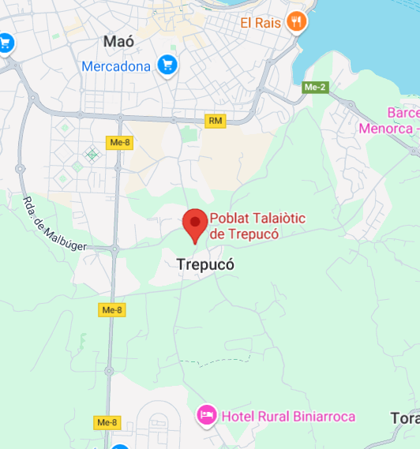

Descripció
Trepucó és un dels poblats talaiòtics més grans de Menorca, amb prop de 5.000 metres quadrats d'extensió.
Ubicació
Està situat a dos quilòmetres de Maó, resseguint el camí vell de Sant Lluís.

Imatges